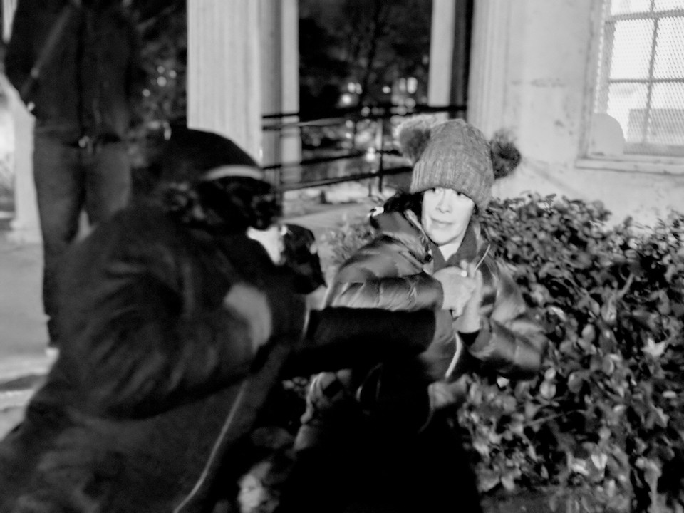

What is BK Muzosa Bujinkan
Brooklyn Muzosa Bujikan Dojo embraces the spirit of Budo - an armed and unarmed historical style of Martial Arts that pre dates modern practices such a Judo and Akido. Known as a living art, Bujinkan Budo Taijutsu is applicable within our modern culture.Training in the evenings in all weather, we believe the way of Budo, is to practice it in all situations and in all environments.
LOCATION:Training takes place from 7:00 pm-9:00 pm on the porch and surrounding grounds of Litchfield Villa in Prospect Park